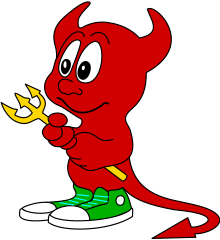
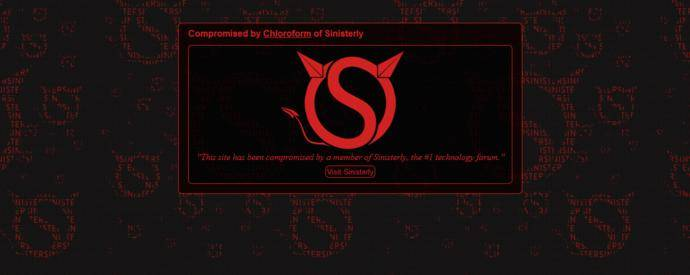

MatsuMemories
November 3, 2024
MatsuPlayer was (keyword) a multi-console emulator for Android, it had support for Nintendo DS, PlayStation, and SNES. My first ever emulation experiences were with this and cheap MetroPCS phones.
MatsuPlayer does not exist officially on the Google Play Store anymore, as it got taken off some time around 2020.
I specifically remember one time when I was waiting for the school bus I was playing a Super Mario Bros. 2 ROM hack. The characters looked like Power Rangers and I got more progress in it than the regular ROM.
This was also the first time I cheated in a game, in Super Mario World I believe I used a website with a dark theme to copy and paste Game Genie codes from. I made a keyhole entrance appear from nowhere!
The emulator supporting PlayStation was a mistake, as I downloaded a PlayStation game from CoolROM. From their domain now (coolrom.com.au) I am guessing that they are from Australia, that must have explained the terrible download speeds I remember. But that could've been the phone as it would struggle with another console more than the PlayStation.
In the Nintendo DS side of things, I played Mario Kart DS and can only remember how laggy it was when I was playing Waluigi Pinball. Don't even remember playing the other tracks.
For getting the ROMs, CoolROM was not the only website I used. I believe there was a website that had retro Pac-Man and Mario sprites that I do not know the name of, and EmuParadise.
And speaking of CoolROM, I remember when one time they were hacked. I loaded their page on Samsung Internet and then I saw a grey screen with a BSD Daemon accompanied by a foreign language. Amazing.
See this daemon? This was the exact one I remember seeing when going to their site. Nowawdays I have searched to see if there were screenshots of this incident and I see this.
Intriguing, another FreeBSD thing. But anyway,
I'll always remember MatsuPlayer for bringing me to the world of ROM websites and cheat codes.
Here is a list of games I remember playing: